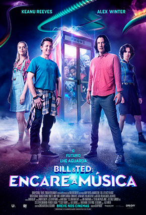

Blindspot
Misteriosa mulher é encontrada na Times Square, sem quaisquer lembranças de quem ela é e de como chegou ali. As únicas pistas que ela possui são as tatuagens que cobrem todo o seu corpo. Um agente do FBI passa a ajudá-la enquanto buscam a verdade.

